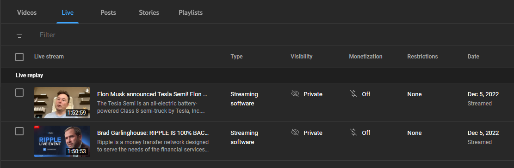

Wanted to compete with pickelhau.be and realsomeguy.github.io so I made this very very cool page that is not writen in notepad and that is not improvised at all and that I didn't spend 3 minutes watching a youtube tutorial to know how to do.
No not at all üòé
Hi I'm the dude who made Deltalovania and Sans is Patrick video!!
though I'm not very proud of that shit
It's currently 6 AM and I've got nothing better to do than write retarded shit.
I'm probably going to make a fuck ton of people mad. You've been warned.
This are my own experiences and personal opinions.
You can skip the next 5 paragraphs if you want to.
My parents know that I have a Youtube channel.
They just didn't care about it until a mysterious 60€ income from Youtube appeared in their bank account.
(Yeah that was my income before [funilly enough] Youtube decided to demonetize my entire channel [we'll get to this later])
My dumbass at the time told my parents I monetized my Youtube videos. Probably one of my worst mistakes.
They started being all like "Oh yeah? MAKE MORE VIDEOS AND EARN MORE MONEY!"
Hell they even told people around my town about my hellish Youtube channel.
Soon enough people at my highschool thought I """"made a living"""" using Youtube.
Mfers were all like "HOW MUCH DO YOU MAKE HOW MUCH???"
Ofc I didn't say I made 60€ a month. I felt like I had to lie or else they would compare me to big ass creators,
I thought that if that happened they would think that I sucked ass (I'm a very paranoid person SHUT UP).
So I lied and said that I made smth like 200€~300€ (I'm also a dumbass SHUT UP).
why did I do that why did I do that why did I do that why did I do that
the flashbacks are COMIG BACK GET OUT GET OUT GET OUT GET OUT

Anyways, after some time, my Youtube channel got hacked (see story bellow) and it wasn't long before my parents noticed.
They were like "lol dan what are you doing with your channel" and I was like "lol I got hacked"
And I kid you not, one of them went "OH, HOW ARE YOU GOING TO EARN MONEY THEN???"
....MOTHERFUCKER my entire damn account got hacked.
Don't you care about how I might feel about that? Or how other people might also feel?
mfers didn't even care about the content I used to upload.
Some people think making money in Youtube is as easy as:
"just make a youtube page and upload dumb tv game videos and you'll become a millionare"
(ok maybe not as exaggerated as that but you get my point)
If it was that easy everyone would be a millionare by now.
Anyways, after I got my channel back I got a notification saying that I wasn't legible to monetize my channel anymore.
Some people would be fucking furious. I was happy.
When my channel was monetized I had this weird ass feeling, like, I needed to pump out as much content as possible.
I'm a very uncreative person and I procrastinate a fuck ton so that was a hard ass task for me.
I had this stupid bird inside my head saying "Dan, you need to upload a video, UPLOAD A VIDEO YOU FUCK"
So I ended uploading half assed videos that even I didn't like. Didn't feel proud of that shit.
And now that the stupid bird is gone I can finally upload shit that I actually put effort in and that I genuinely like.
ANYWAYS ENOUGH VENTING ABOUT MY STUPID LIFE, let's get to the main motive of why I decided to write this stupid story.
I saw a Youtube community post from a creator that said something like:
"Youtube has entirely demonetized my channel! I won't upload any more videos üò°"
And THE AUDIENCE was like "wow shame hope you get it fixed"...
...completely ignoring the fact that the creator they're subscribed to just put monetization above their own audience.
This made me internally boil.
Did the creator literally stop uploading videos because Youtube had a bad day?
Don't they care about their audience bruh?
To me Youtube is a passion project, not a reliable source of income.
Trying to make money on Youtube is hard as fuck, and with the amount of shit management that there is it's not even worth it.
Even some big ass creators have problems with Youtube monetization, and they're still kicking ass uploading banger videos.
Literally, it's not like if the "UPLOAD VIDEO" got locked behind bars or anything? What's stopping them?
They could literally make a Patreon, a Ko-Fi, a Kickstarter, a damn Paypal account, comissions, apply for a job...
My brain has officially stopped working
And what about the community? Can't they do anything more than say shit like "welp lol sucks to be you ig"
Isn't the audience capable of accepting the fuckt that Youtube sucks ass in terms of income? Can't they like, go to the creator's Patreon or something and send them a fucking dollar?
I'm a broke ass bitch and even I am capable of showing appreciation to my favourite creators and support them...
(By the way, the creator I'm talking about is NOT Dan Worrall. That guy is legit amazing and deserves a medal.)
Or maybe the audience was so full of the creator's shit that they just didn't want to know anything about them anymore...
Makes sense considering the community post the creator made lmao.
Message to y'all, don't be greedy fuckers. That shit is the worst and can't only fuck you up, but others as well.
On an unrelated note, the amount of...
"HIT THAT SUBSCRIBE BUTTON RIGHT NOW AND LIKE THIS VIDEO,
ALSO ONLY LIKE 0.00001% OF YOU ARE SUBSCRIBED TO THIS CHANNEL,
BUT FIRST LET ME TALK ABOUT OUR SPONSOR!!!!!
OH YEAH AND HIT THAT BELL BLAH BLAH BLAH"
...videos that are currently on Youtube is overwhelming.
They completely overshadow the creators that genuinely like to make videos and actually try to put in effort to grow an amazing community.
Youtube is slowly going to shit. That's it. That's the end of my stupid rant about Youtube and monetization. I just wasted your time.
Please don't kill me
on december 5th of this year (2022 AS I'M WRITING THIS) my YOUTUBE CHANNEL (and also my old Gmail account) got hacked!!!
I couldn't log into my gmail account because my password had been changed.
Tried recovery email and NOTHING, tried recovery phone number and NOTHING, EVEN MY 2FA WAS SOMEHOW BYPASSED AND TURNED OFF
Some Guy in my discord server was like "DAN LOOK AT YOUR YOUTUBE CHANNEL"

shit was the weirdest shit??? Suddenly I found out that I was fucking TESLA
YES I did notify Youtube about what was going on, they were like "OH you can ask GOOGLE to help you recover your account while WE RECOVER YOUR CHANNEL"
NEEDLESS to SAY, GOOGLE didn't help SHIT. They kept me going in circles doing tons of nothing.
On a serious note now, it's funny how Google is all like "We want to make your account as secure as possible! 2FA! Recovery phone number! Recover email address!"
but when all those security features are hijacked and bypassed then the damn security features turn against you!
WHILE GOOGLE was having me do acrobatics, Youtube was trying to recover my channel since it accidentally got deleted because "Impersonation" or some shit.
AND IT WORKED, they transfered the ownership to my new gmail account and everything's back on track.
The thing is up and still working like the good'ol channel I used to have!
STILL DOESN'T MEAN THAT I HAVE RECOVERED MY OLD GMAIL ACCOUNT DIJGHIKGJADKGHJKLDAGHJKLAD thanks Google for being very useful!!! (very sarcastic)
ALSO the stupid fucking scam livestreams are archived lmao I don't know if that's a good thing or a bad thing...
People, you gotta be REALLY FUCKING CAREFUL doing shit online.
Don't download weird ass files, don't enter shaddy ass looking websites (Mine is very shaddy looking I know BUT I SWEAR IT DON'T HAVE ANY VIRUSES‼️)
Don't click suspicious ass links. AND FOR THE LOVE OF GOD go get some good amazing antivirus like Malwarebytes, AVG, Avast or even ESET. Windows Defender will only get you so far.
But by FAR, the best antivirus is your own COMMON SENSE.
No, I wasn't stupid enough to click Free Discord Nitro links. I don't even remember entering any weird ass sites when everything happened?
Really shows that NO ONE is safe online. Y'all gotta be careful as shit for real...